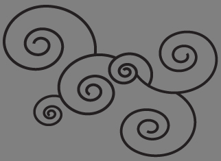
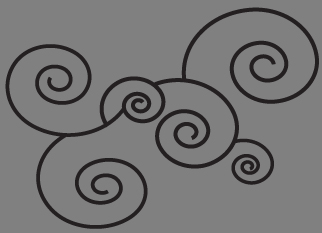

Her Story
Marian Bantjes is an internationally respected and admired graphic designer, known for her beautifully detailed decorative images that create a style which is both antique and modern. She was born in Canada in 1963 and works from her home on a small island off the west coast, near Vancouver. In 2008 she became a member of the prestigious Alliance Graphique Internationale (AGI) an organisation made up of the world’s leading graphic artists and designers. She has published books with Thames & Hudson including “I Wonder” (2010) and “Pretty Pictures” (2013) and currently attends conferences and events all over the world where she talks about her work and her thoughts.
Her success did not happen overnight and she was in her early 40s before she began to be recognized in the world of design. Her creative journey started from humble beginnings as an art school drop-out, who in 1983 just happened to notice an ad for a job in a publishing company Hartley & Marks when she went into a second hand book shop looking for change for the bus. She got the job and so her career began. It has three clear stages.
From 1983–1993 she worked for Hartley & Marks as a book typesetter. Although this job had little to do with design, Bantjes learned important skills which she carried with her as her career progressed. She later on referred to typesetting as:
“A skill of a very old-fashioned sort, similar to that of a tailor. The goal is to make it right, to make it fit, to make it elegant”
(Marian Bantjes, Pretty Pictures, 2013).
These qualities are evident in Bantjes work as she moved towards design.
Realising that she lacked the skills necessary to get a good job in a design firm, Bantjes decided to start her own design company along with a friend. The company, Digitopolis (originally called Communication by Design) employed up to 12 people and it was here that Bantjes learned the ins and outs of graphic design, working as the main designer from 1994 to 2003.
In 2003 Bantjes left the company to work on her own. She had become disillusioned with the business and realized that she was unable to express herself the way she wanted to. She felt bitter and jaded, commenting later on that this was her
“Mid-life crisis”
(Marian Bantjes, Pretty Pictures, 2013).
She decided she had finished with graphic design and when her business partner offered to buy her out she jumped at the chance. She no longer wanted to have to adapt her style to the needs of her clients but rather wanted to develop her own style which clients would then come to her for. She believed that she could only express her own personal style as an illustrator and began to consider this change of direction.
However, a series of events that took place between July 2003 and August 2004 ensured that she did not abandon the world of graphic design and saw her career take off.
She became an Author of “Speak Up”, a lively design weblog where designers would post their views on design related topics. Her cheeky but thought provoking articles soon got her noticed and as she became more and more involved in writing for the blog, she gained greater understanding of the design world and began drawing and exploring new ideas. She admits herself that this was probably a case of being in the right place at the right time. The blog was the only design blog in existence so it was very popular and followed closely by the US design community, thus putting Bantjes in contact with some very important people.
She joined the Society of Graphic Designers of Canada (GCD) and became “Communications Chair” of the local board. This gave her control over the design and production of print materials and allowed her to explore design without the confines that had stifled her creativity at Digitopolis.
When “Speak Up” held a T-shirt competition, Bantjes entered, although she thought it was somewhat beneath her. She won and became known for her design which resulted in her being invited by Rick Valicenti to contribute to one of his projects.
SPEAK UP TSHIRT, SEPTEMBER 2003
PIXILLUMINATIONS PIXELS FOR RICK VALICENTI & THIRST, NOVEMBER 2003
In 2003 she attended her first ever AIGA (American Institute of Graphic Arts) conference that was held in her hometown, Vancouver. She was extremely eager to let the design world know about her work so she took the opportunity to network and she distributed her piece “Poster One”. She says:
"I was bold in a way I had never been before or since."
(Marian Bantjes, 2013, Pretty Pictures)
POSTER ONE, OCTOBER 2003
Although Marian was becoming recognized through her work, she was not earning any money and had to borrow some. Finally in 2004 she got her first paid assignment which was to create something like her Speak Up T-shirt for Details Magazine.
AMERICAN PREVIEW, for Details magazine, JUNE 2004
After the American Preview assignment, the next two years went well for Marian with work flowing in.
“I was actually making a living and could call my life change a success”
(Marian Bantjes, 2013, Pretty Pictures)
In 2004, Marian added another string to her bow when she was asked by Emily Carr University to teach a Typography course. The University didn't have any course material so she had to create the 13 session course herself. Marian found the experience an extremely rewarding one and was astonished at how much she was able to teach her students, commenting that she was able to change the way they saw the world. She also felt that she herself learned from this course in how to speak in front of an audience, which would be a useful skill for her in the future.
Her Work
Marian is a designer with her own personal signature that shines through all her work. This work ranges from commercial pieces for top brands to extremely personal pieces and from collaborations with other designers like Stefan Sagmeister to commissions for magazines and various projects. The following is a selection of my own particular favourites from 2007 to 2012.
2007
This was an excellent year for Marian during which she produced some of her most iconic pieces and made more money than she had ever done before or since. One such piece is the TYPECON POSTER, 2007. In an interview with John L Walters in 2009 when asked which projects had stretched her the most, Marian replied
“The one that I pushed myself on the most was the TypeCon 2007 poster, which was just ridiculously difficult”.
(Marian Bantjes, interview with John L Walters in 2009)
When she was asked to create materials for Typecon, Marian wanted to break away from her usual work. The theme of the conference was “letterspace” so she created a poster built with three dimensional letters, intricately connected with each other with simple lines in black and white. The effect is striking and Marian herself later describes the poster like “a mountain of concrete and steel: beautiful and ugly.” She also created a programme for Typecon with an accompanying booklet full of information, such as the speakers’ biographies. Other pieces included t-shirts, announcement cards and ads.
TYPECON POSTER, 2007.
TYPECON, PROGRAMME, 2007

2008
For Marian most of the work in this year was due to the success of 2007. She was beginning to feel frustrated at being asked to recreate previous work and styles for clients. On the positive side she began to travel internationally giving talks and felt as if she had made it in her career. A striking design she produced was the Strathmore Thistle. For this piece of work Marian was hired by Michael Bierut, a partner at Pentagram to design a thistle for a new mark of Strathmore papers. The company had a thistle for their logo and had also used other types of thistles in their packaging so they wanted a definitive one that would head them all. The design below was the one chosen and the final ream wraps that follow were developed from the design, by Katie Barcelona, at Pentagram.
STRATHMORE THISTLE, 2008
2009
In 2009, Marian took time away to travel and pursue an idea for a book. This however didn't stop her from doing some projects that she just couldn't turn down. She describes the following piece as one of her all-time favourites. She was given the text and allowed to design the rest as she wished.
GQ ITALIA, AUGUST 2009
2010
Marian's work on her book ‘I WONDER’ didn't finish until the end of March 2010. Once she was finished she returned to her regular schedule. She was approached by Wallpaper* magazine to design the graphics for their exhibit of a laser boat at the Salon del Mobile in Milan. The result was this visually stunning angular design.
WALLPAPER* LASER SAILBOAT
2011
Although Marian felt discontent and unsettled in 2011 due to people wanting her to recreate work she had done before, she continued to produce vibrant pieces such as the Valentine hearts below. The hearts were divided into six slices so that people could give some to their friends, just as Marian had done when she was a child at school.
VALENTINES, 2011
2012
Todd Falkowsky asked Marian to create a surface design for a Bluedot Chair which would be part of a charity auction for the Interior Design Show in Toronto with proceeds going to ONEXONE.
BELLA CHAIR, 2012